13 November 2026 · Actual Unity renders for visual review.
Open each image at full resolution, or compare it with its actual gameplay frame. Compare three density options.
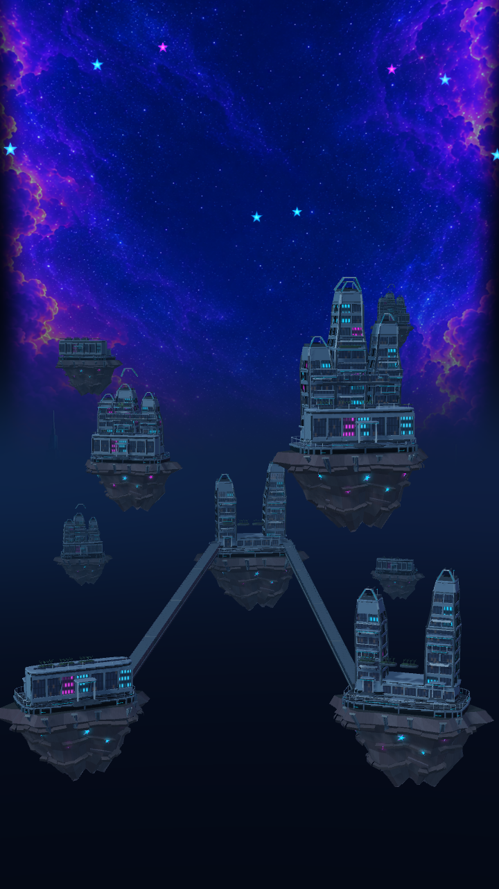
Full background · Actual game view
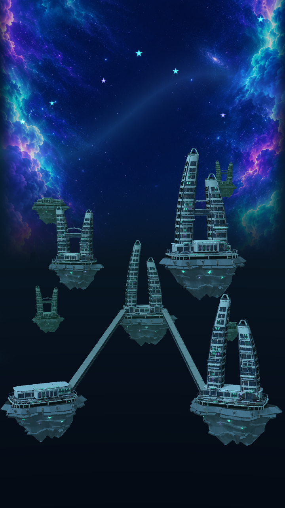
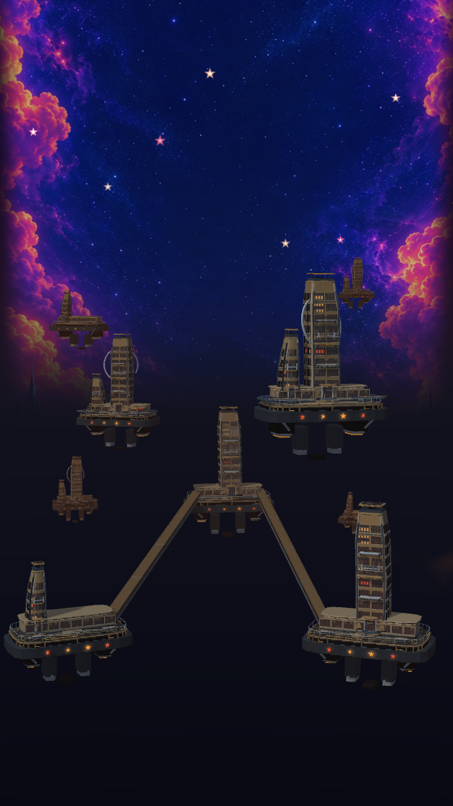
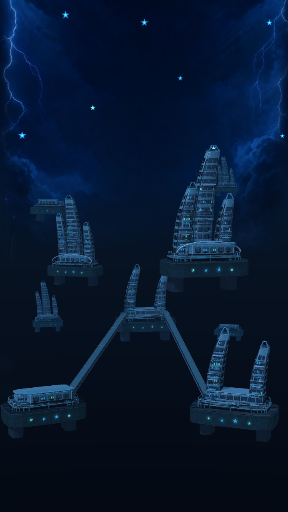
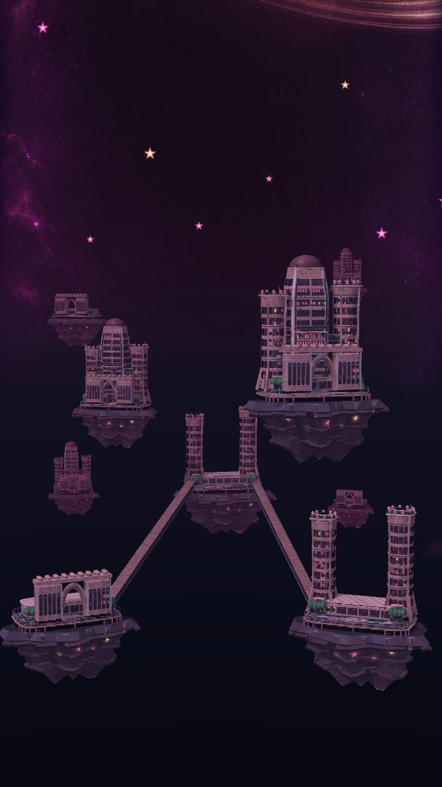
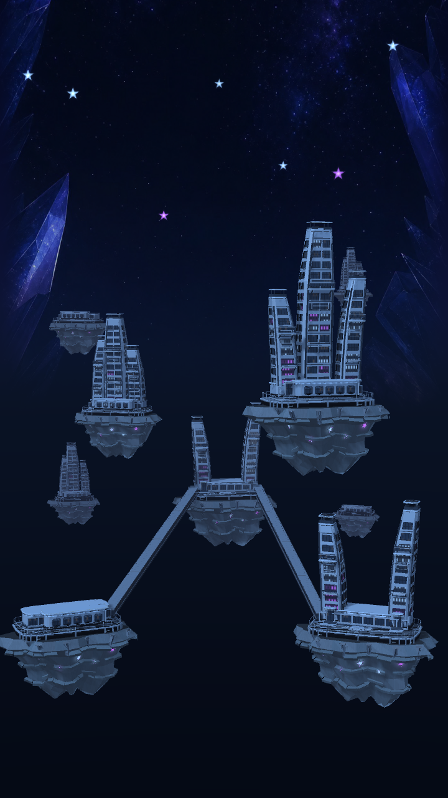
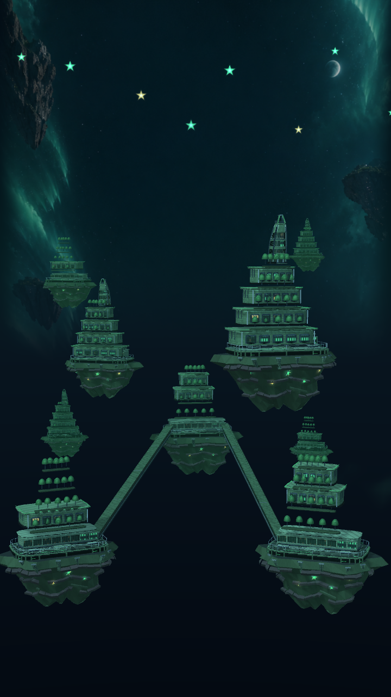
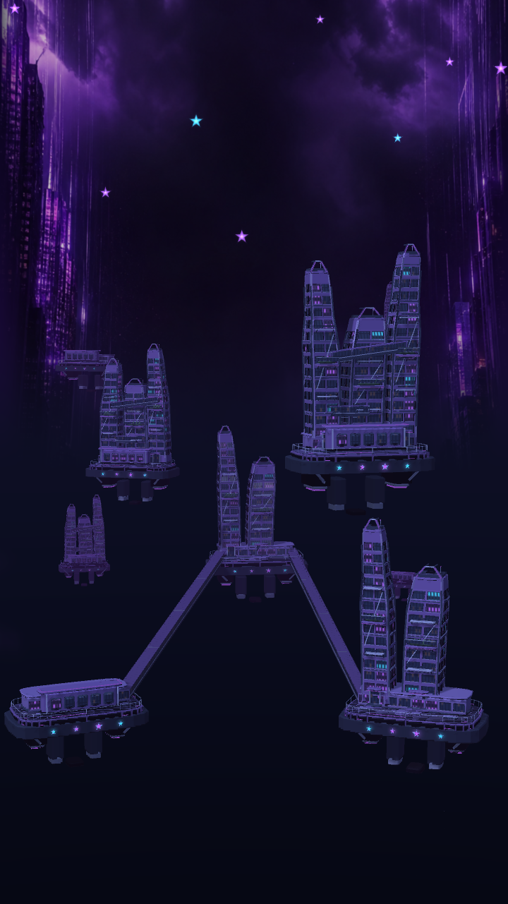
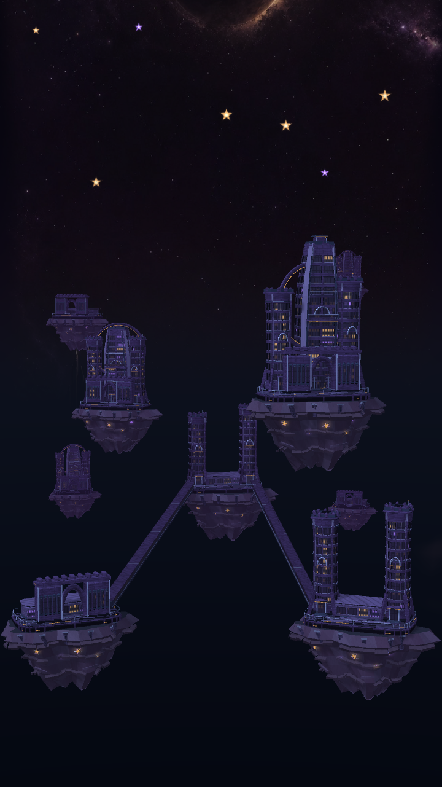
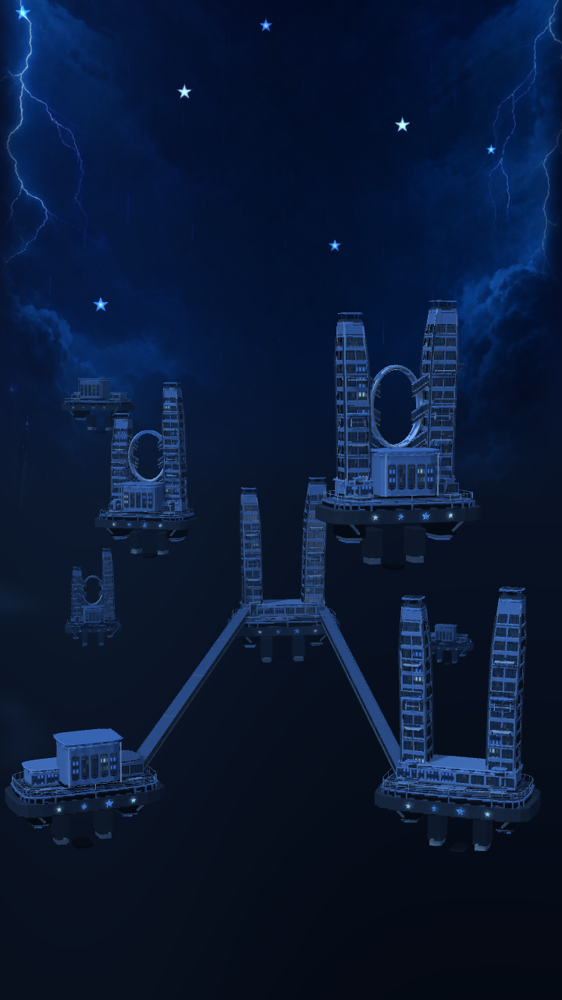
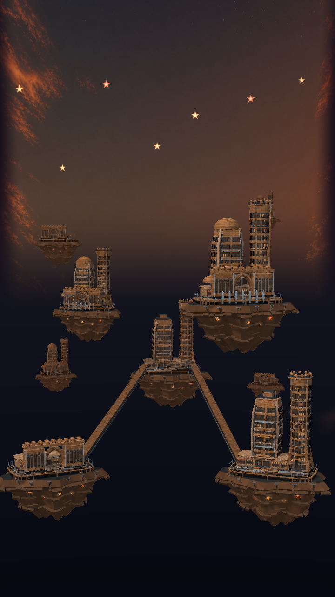
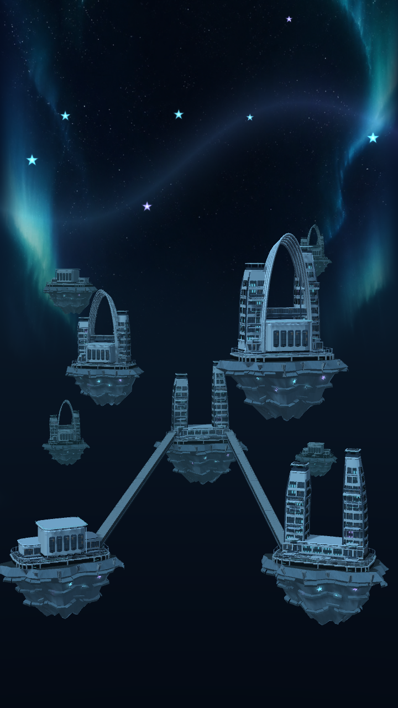
Unity visual studies. Proposed rewards and behaviour are described in the design notes.
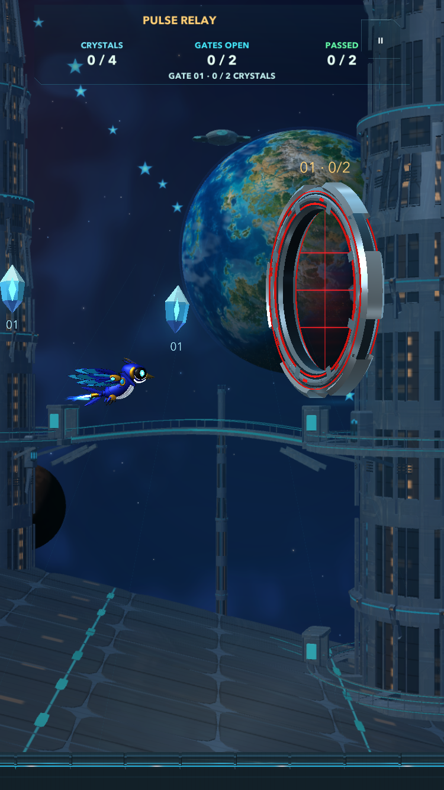
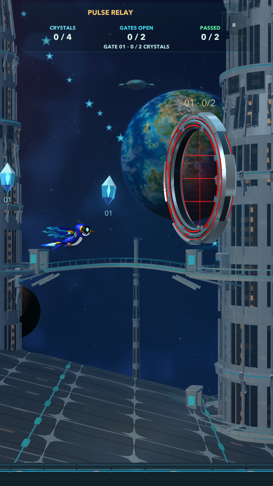
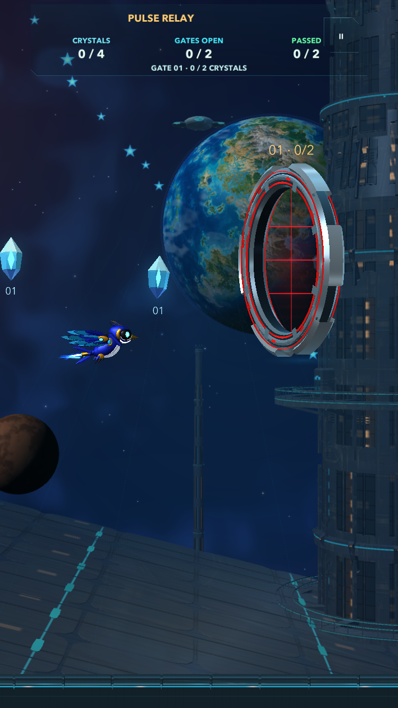
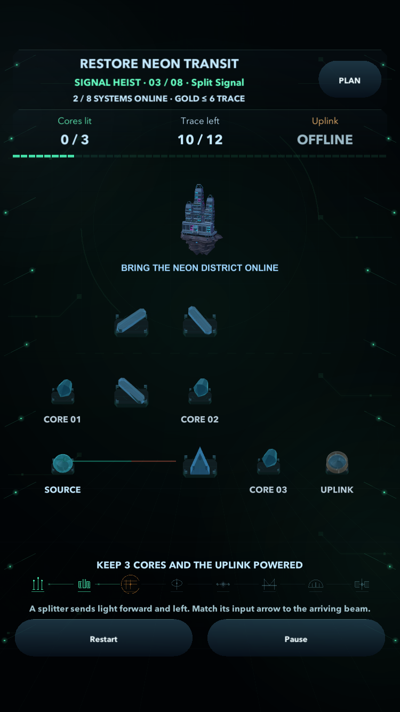
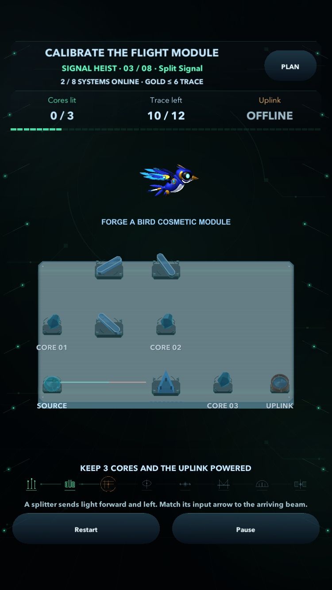
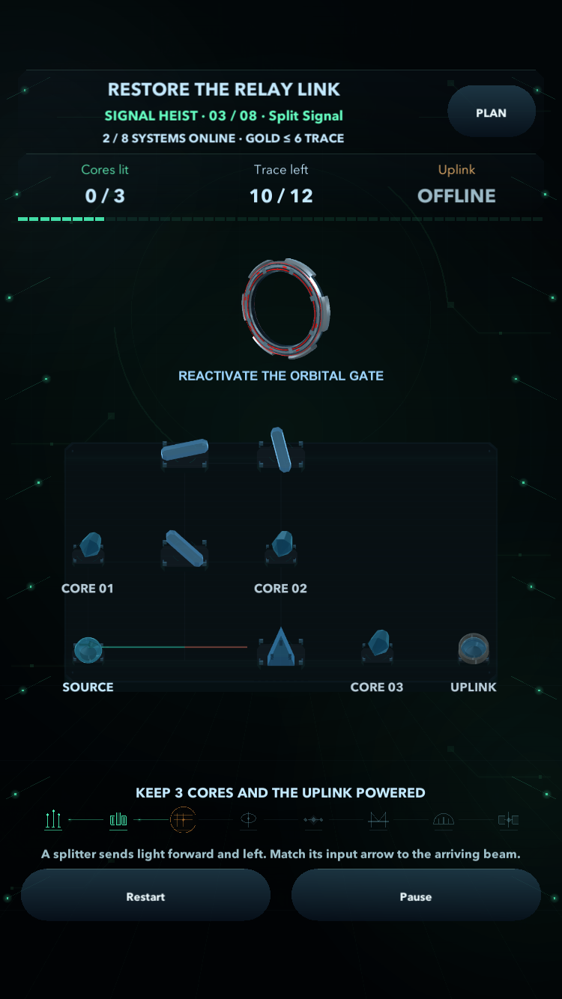